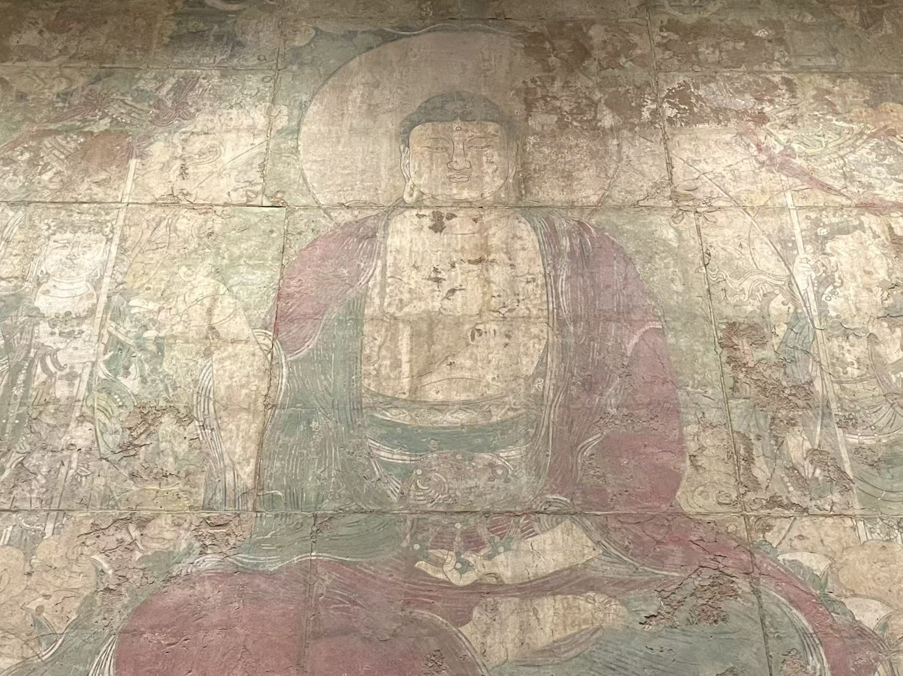
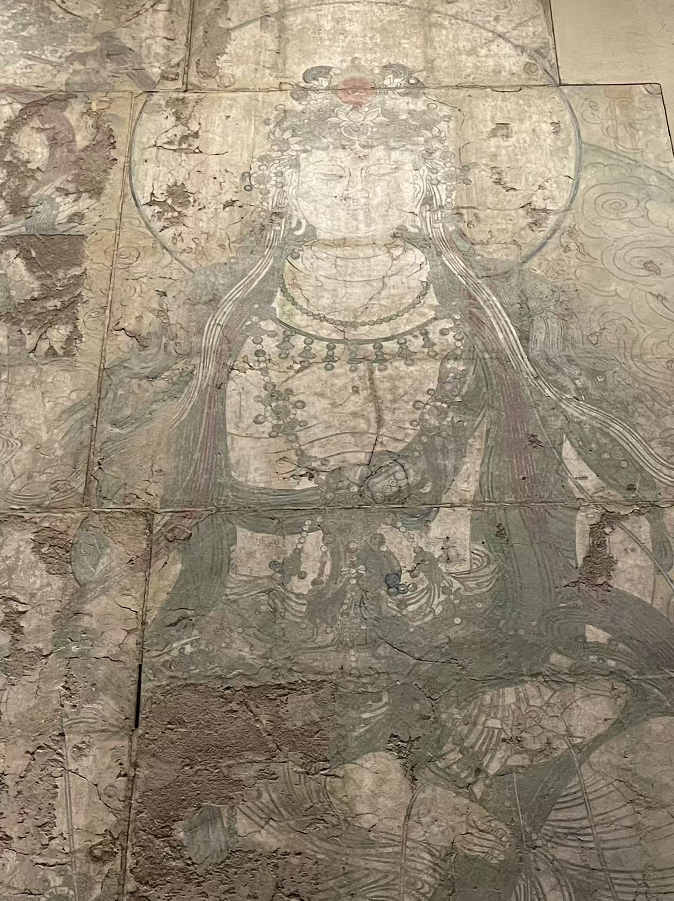
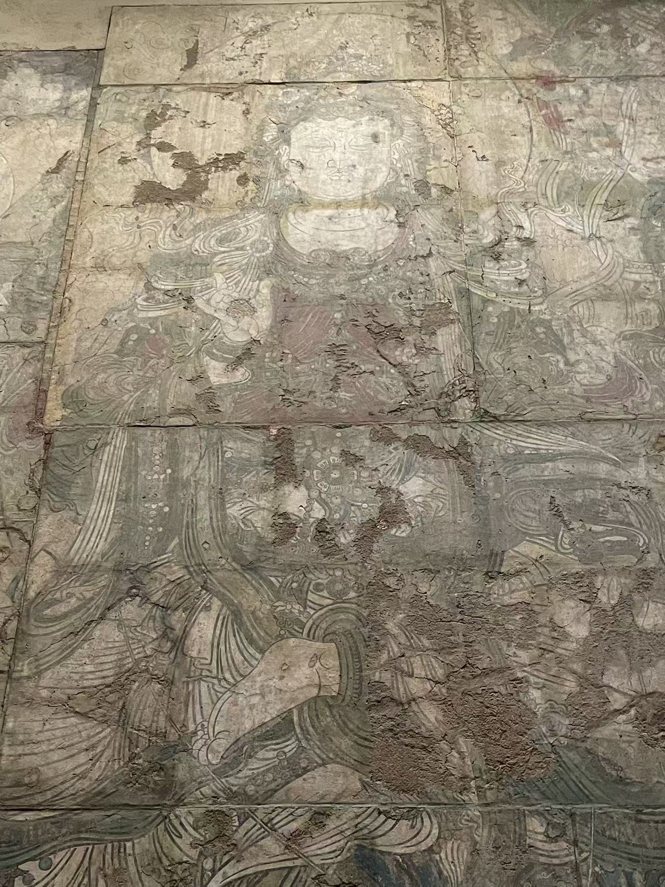
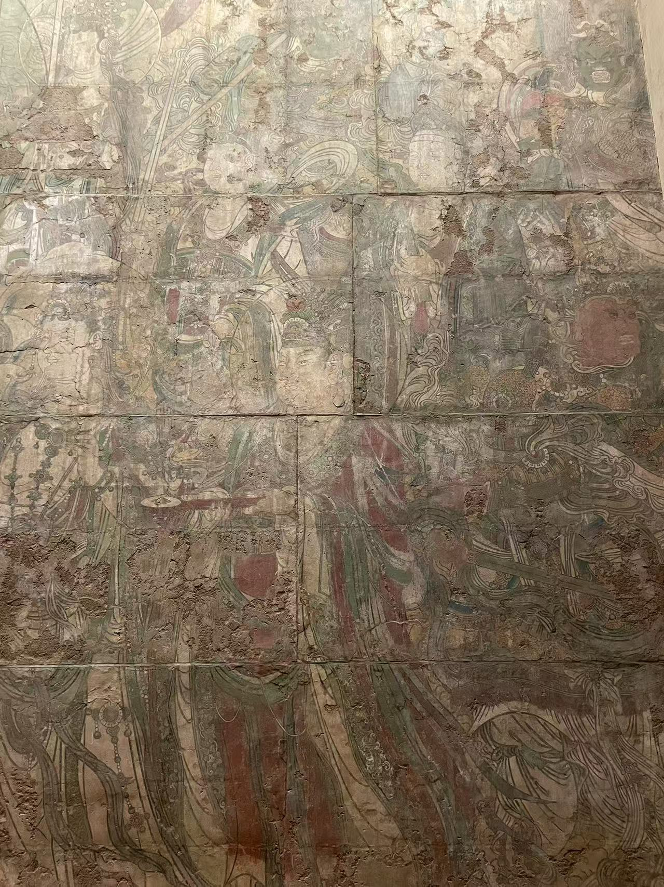
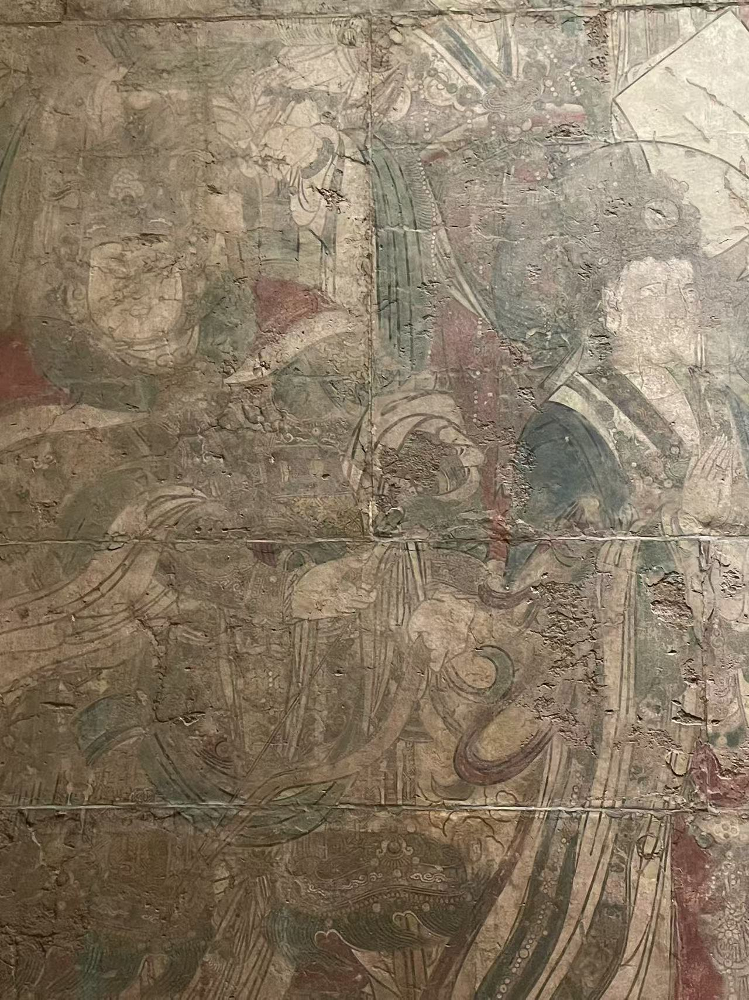
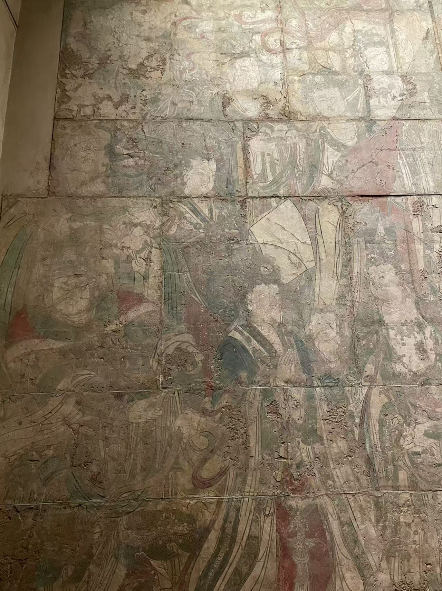
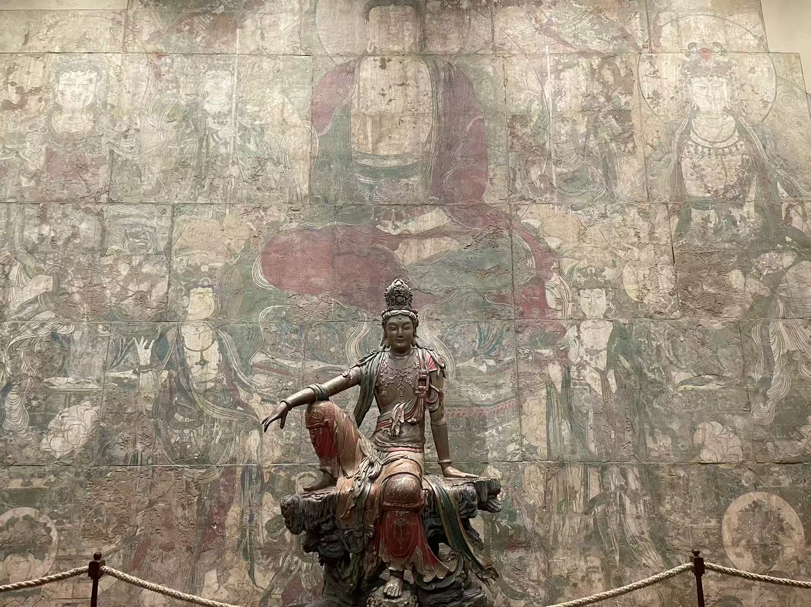

元 / 寺院壁画
炽盛光佛说法图
看画
点击照片可放大；有多张照片时，可以切换查看。













作品札记
中央的炽盛光佛端坐莲台，红色衣袍铺开，两侧菩萨的璎珞和飘带又把视线带向外缘。放大后，先看那些长而有力的墨线：它们既勾出身体的分量，也让层层叠叠的衣料有了方向。
围绕主尊的群像与星曜信仰有关。馆方辨认出日、月、金木水火土五星，以及罗睺、计都、紫气、月孛，共十一曜。炽盛光佛被认为能够制御星曜、消弭灾害；馆方将这幅画的委托背景，联系到1303年重创寺院的地震，认为这可能是作画的契机。
它原在广胜下寺大雄宝殿西壁，与今天大都会收藏的药师佛壁画相对。纳尔逊1932年从卢芹斋的公司购入；馆藏档案还记录了它从巴黎出发、经新奥尔良运往堪萨斯城的路线。
墙面上纵横的接缝，也是离开寺院后的痕迹。馆方保护介绍记载，壁画曾分为47块运输，1933年安装时以石膏和钢材加固。后来逐区摄影、调查表面状况，也让研究者能把裂隙、修补和原有彩绘分别记录下来。
展厅中的观音木雕另有自己的身世。现场说明还指出，天花来自北京智化寺，门扇来自另一处宅第，部分柱梁是20世纪30年代的重建。这里呈现的是博物馆组织的“寺院”空间，壁画在广胜寺的原来位置则是另一条线索。
展厅中的壁画
点击照片可放大；有多张照片时，可以切换查看。

